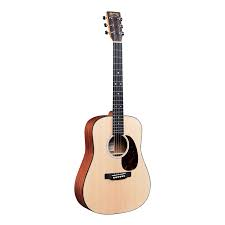
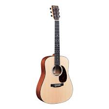

Aparte de las guitarras acústicas clásicas, fabricaadas con cuerdas de nylon, existen las acústicas con cuerdas de acero.
Estas fueron desarrolladas por la marca de guitarras C.F. Martin & Co,compañía que fabrica guitarras establecida durante del siglo XIX.
El diseño de estas guitarras se basó en el acorazado de guerra "Dreadnought", barcos que operaban a principios de los 1900.
 
Una historia mas detallada aquí

Una historia mas detallada aquí